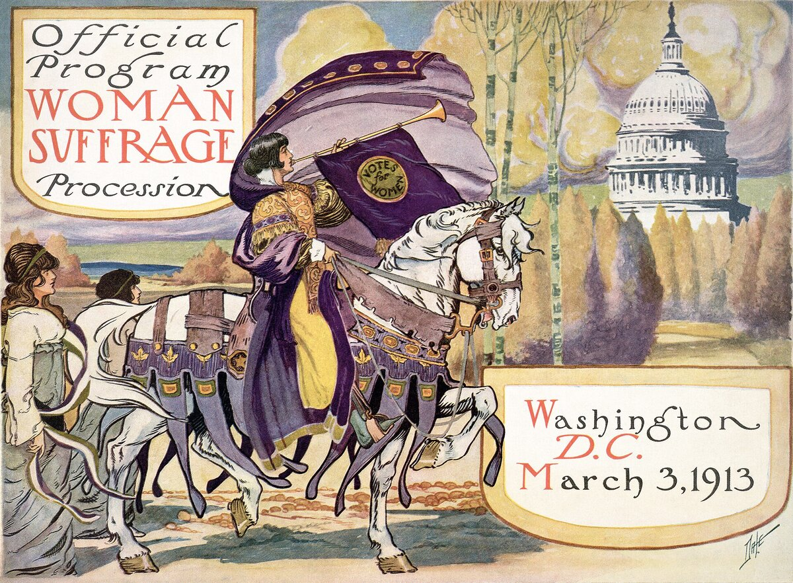
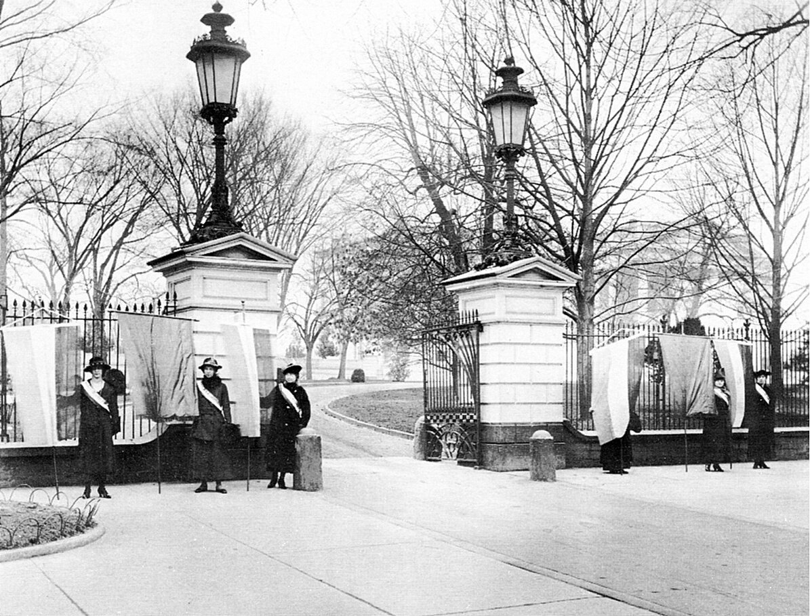

C1 · American History
Women Win the Right to Vote
Seventy-two years from the first demand to the amendment, and it came down to one legislator's mother writing him a letter.
Play the audio and follow along, then read it again on your own. Tap or hover over a highlighted word to see what it means.
The campaign for women's suffrage in the United States took seventy-two years, which is longer than most of the people who began it lived. It is usually told as a story of steady progress, and it was not: it included a bitter split within the movement itself, a generational handover, prison hunger strikes, and a final vote decided by a single legislator who changed his mind because of a letter from his mother.
The conventional starting point is the convention at Seneca Falls, New York, in 1848, where about three hundred people adopted a declaration modeled on the Declaration of Independence. Every resolution passed easily except one: the demand for the vote, which was considered so extreme that it nearly failed, and which carried only after Frederick Douglass spoke in its favor.
The first serious crisis came after the Civil War. The Fourteenth and Fifteenth Amendments extended citizenship and voting rights to Black men, and the question was whether suffragists should support them while women remained excluded. The movement split. One wing, led by Elizabeth Cady Stanton and Susan B. Anthony, opposed the amendments and made arguments in the process that were explicitly racist — that educated white women should not be enfranchised after formerly enslaved men. The other wing, led by Lucy Stone, supported the amendments on the grounds that half a loaf was a loaf. The organisations did not reunite for two decades, and the racial politics of that argument shaped the movement for the rest of its life.
Progress then came state by state, and it came first in the west. Wyoming Territory granted women the vote in 1869, partly on idealistic grounds and partly to attract settlers and to make a point about statehood. Colorado, Utah and Idaho followed in the 1890s. By 1916 women could vote in about a dozen states, almost all of them western, and could therefore affect presidential elections, which concentrated minds in Washington.
By the 1910s two strategies coexisted uneasily. The National American Woman Suffrage Association, under Carrie Chapman Catt, pursued a patient state-by-state campaign combined with careful lobbying, and in the war years emphasized women's contribution to the national effort. The National Woman's Party, under Alice Paul, who had been trained in the militant British movement, concluded that patience had produced seventy years of sympathy and no amendment.

From January 1917, Paul's organization picketed the White House daily — the first group ever to do so — holding banners quoting the president's own speeches about democracy back at him while the country was at war. Public tolerance collapsed once the United States entered the fighting; crowds attacked the pickets and the police arrested the women rather than their attackers.

In prison at Occoquan, hunger strikes were met with force-feeding, and on one night in November 1917 the guards beat the prisoners badly enough that the episode became known as the Night of Terror. The accounts that reached the newspapers did more for the amendment than any lobbying.
The amendment passed the House in 1918 and failed in the Senate, passed both chambers in June 1919, and then needed thirty-six states to ratify. Thirty-five ratified; the last, in August 1920, came down to Tennessee, where the vote in the lower house was tied. A twenty-four-year-old representative, Harry Burn, had been voting against. He had in his pocket a letter from his mother telling him to be a good boy and help Mrs Catt. He changed his vote, the amendment was ratified, and he spent some time afterwards explaining himself.
What the Nineteenth Amendment did was prohibit the denial of the vote on account of sex. It did not create a universal right to vote, which the United States still does not have in simple form, and that distinction had immediate consequences. Black women in the southern states were removed from the rolls by the same poll taxes, literacy tests and intimidation that had removed Black men, and they remained excluded in practice until the Voting Rights Act of 1965. Native Americans were not uniformly citizens until 1924 and were kept off the rolls in several states long afterwards. Chinese immigrants were barred from naturalisation until 1943.
Writing the history as a single victory in 1920 is therefore accurate for some American women and misleading for others, which is a useful warning about how rights are usually extended: not in one movement, and rarely to everybody at once.
Key Vocabulary
- suffrage the right to vote in political elections
- a convention a large formal meeting of people with a shared purpose
- a resolution a formal statement voted on by a meeting
- to enfranchise to give somebody the right to vote
- to lobby to try to influence politicians in favor of a cause
- militant using confrontational methods for a cause
- to picket to stand outside a place in protest
- a hunger strike a refusal to eat as a form of protest
- to ratify to give formal approval, especially to an amendment or treaty
- naturalisation the process of becoming a citizen of a country you were not born in
Women Win the Right to Vote — C1 · American History · Renan the Teacher, English Language Academy · https://renangrossi.github.io/englishclasses/reading/c1/women-win-the-vote.html
Interactive Exercises
Practice
Complete each exercise, then click Submit to see your score and an explanation for every answer.
Speaking & Writing
Discussion
There are no right answers here — use these to practice speaking, or write a short answer to each.
- The movement split over whether to support rights for one group while another waited. How should campaigns handle that choice?
- The militant wing was criticized for damaging the cause, and the publicity from its imprisonment helped win it. How do you judge tactics like that?
- The text ends by saying rights are rarely extended to everybody at once. Can you think of an example from your own country?